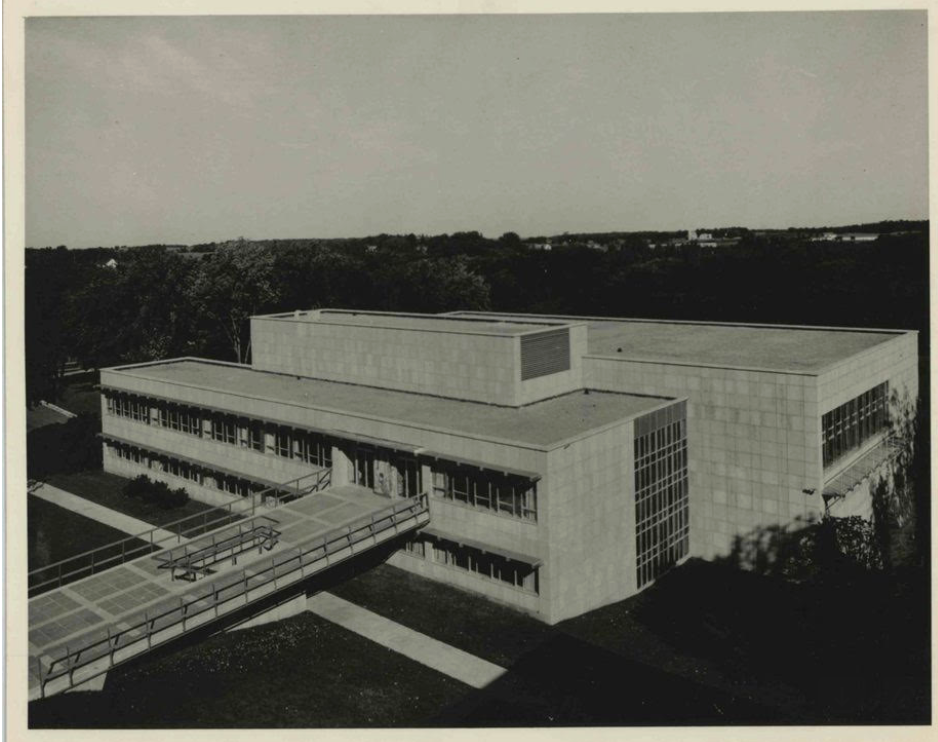
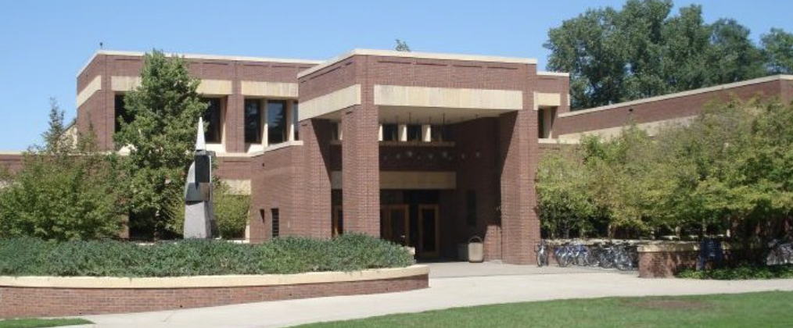

Originally built in 1956 by architectural firm Magney, Tusler, and Setter, Gould Libe stands as one of the most interesting buildings on campus. Originally only the bottom two floors, a drawbridge would bring students into the building.

In 1983, the Libe was renovated and expanded by architectural firm Sovik, Mature, Sathrum, and Quanbeck. The firm chose to make the Libe more in tune with contextualism, which is to say it should blend in, not stand out. The building references Laird’s brick, while the yellow limestone used to set off the brick is the same stone as the original building. Yellow limestone seems to be an unexpected motif across Carleton’s campus, as found in Willis and Boliou as well. Gould Libe is in the “Modern” era of Carleton architecture.
